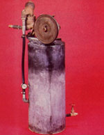
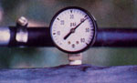
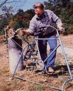
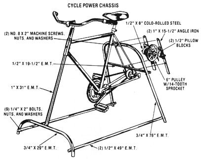

Cycle Power
Bicycles are among the world’s most energy efficient machines. Learn how to build a stationary bicycle that you can put to work. The research staff at Mother Earth News built this stationary bicycle that uses human pedal power to operate a water pump for their solar greenhouse.
By the Mother Earth News editors
January/February 1981
Put one of the world's most efficient machines to work for you!
Without a question, humankind's most practical transportation achievement to date is the bicycle. In fact, a person on a cycle is nearly fire times as efficient as he or she is when walking. And, on the other end of the energy-in/energy-out scale, driving an automobile requires nearly 75 times as many calories as does pedaling a bicycle the same distance!
The spectacular efficiency of bicycles (10-speeds in particular) has led many tinkerers to put them to use doing stationary work. (The antecedents of such a practice include the treadle sewing machines, lathes, and sharpening wheels that our forebears used.)
So, in response to numerous requests from readers, MOTHER's research staff decided to develop its own variation on the ages-old idea. This issue's installment will describe how to put together a bicycle-based foot-power chassis, and how to use the pedal-produced energy to run a water pump. In future issues we'll consider other applications for this basic unit . . . from electrical generation to power-tool operation!
FRAMING THE FRAME
Quality 10-speed bicycles are carefully designed and manufactured to make the best use of the power supplied by your legs. Therefore, if you want the most efficient pedalenergy device possible, start with a well-built cycle. Of course, that doesn't mean you need to spend several hundred dollars buying a brand-new lightweight racer: Many bargains (for our purposes) can be located in junk piles. (For example, we bought our Raleigh 10-speed from our local hardware store's scrap pile . . . for $5. )
Once you have acquired this essential component, the construction of the footcranked powerplant is mostly a matter of providing the cycle's chassis with a stable platform. Start by detaching the wheels from both ends of the bike, and then loosen and remove the rim and spokes from the rear wheel hub. (To accomplish this task, you'll need to pull the tire and tube from the wheel rim, and unscrew each spoke . . . using either a suitable spoke wrench or a screwdriver modified to slip into the spoke nipple.) Now, reinstall the rear hub and axle.
At this point we recommend that you remove the bicycle's front fork assembly. Though it is possible to attach a metalpipe base similar to ours directly to the fork legs (by using the old axle mounts), the wheel supports of most bicycles are designed to flex slightly to absorb road shock, and would provide a rather wobbly mount for your cycle-power unit.
We opted, instead, to weld a 31" length of 1" E.M.T. (electrical metallic tubing) to the conduit legs. The pipe should run through the cycle's steering head, and will eventually-once the assembly has been leveled-be bolted securely in place.
The front legs of the frame are formed from a 29" length of 3/4" E.M.T. with a 6"-radius, 90° bend at each end. The same curves should be made on the rear legs of the base, but use a 76" piece of E.M.T. for these, and center the bends 28-1/4 inches from each end of the tubing. (You'll need a conduit bender to shape both the front and rear legs . . . or you could use an adjustable arc roller, such as the one detailed on page 154 of MOTHER NO. 65. )
Once you've prepared the leg assemblies, cut two 49" lengths of 1/2" E.M.T. to serve as connectors between the front and rear sections. Then drill 1/4" holes at points one inch from each end of both conduits . . . making sure that the bores are parallel. Continue by drilling corresponding 1/4"holes one inch from the base of each leg, and bolt the frame loosely together with 1/4" X 2" bolts, washers, and nuts. (After you've established just how the cycle will fit into the base, you can snug the four bolts down.)
Now lift the stripped bicycle chassis into position and "eyeball" the most convenient way to secure it to the conduit framework. In our case, a bracket that had been used to mount the rear brake lined up very well with the top of the back legs, so we just bolted the two assemblies together. (Bear in mind that there is a good deal of margin to work with, since the front of the bike can be raised or lowered-on the 1" E.M.T. for leveling purposes.) When you're satisfied with the fit, drill the appropriate holes . . . bolt the bicycle into place . . . and cinch up the 1/4" bolts on the E.M.T. framework.
The chassis should now be relatively steady, but-to add a little extra rigidity-we chose to run a 19-1/2" piece of 1/2" E.M.T. across the rear legs, 19-1/2 inches above the floor. This tube bolts both to the legs and to the rear fork of the bicycle, and helps keep the device from rocking forward.
THE PULLEY SYSTEM
Because the bicycle chain system is not compatible with the drive setup on most tools, we decided to run a jack shaft from the cycle's rear axle in order to make the change to a V-belt and pulley arrangement. Two 15-1/2"-long pieces of 1" angle iron were used to mount the 1/2" pillow blocks that support the pulley shaft. The bottoms of the angle iron sections bolt directly to the bicycle's rear axle, and the tops are attached to the horizontal section of the rear legs. The pulley itself is a 6" type A (the largest we could fit into the space available), and is driven by a 14tooth sprocket compatible with the bicycle's chain.
Though the various projects that you may want to undertake with your cyclepower system will require different RPM to operate correctly, the vast majority will need more rotational speed than you'll be able to develop at the crank. Therefore, we mounted our cycle's primary chain permanently on the largest front and smallest rear sprockets. The ratio achieved by that procedure, combined with the additional step-up supplied by going from the largest rear sprocket to the 14-tooth spur on the pulley, increases the speed by a factor of about six.
CRANK CALL
The remaining components necessary for a complete cycle-power system are a willing pedaler and a tool to operate. As we mentioned earlier, there are a number of different implements that can be powered with a pedaled setup. What we particularly needed, though, was some way to pump water-for heat storage-to a remote solar greenhouse . . . so we'll give you a brief description of our liquidlifting cycle.
At the rotational speeds that we're able to generate with our bike, a piston-type pump was found to be the best choice. Though new piston pumps tend to be relatively expensive, you should be able to find a serviceable used unit. (A good example is the Sears and Roebuck shallowwater pump, for which the company maintains a good stock of repair kits.) We managed to acquire a used Everready that was rebuilt and suitable for service-along with a 20-gallon pressure tank-for $20.
Once our pressed-back-into-service water mover has been primed, it's able to push liquid up as high as 25 feet and deliver around 120 gallons per hour . . . depending upon the enthusiasm of the operator. And when the water has filled the black solar storage drums and the greenhouse's seeds have begun to grow, our "solar-powered" water pump is nearing a complete energy cycle: We can nibble on a few of the greenhouse plants . . . to get the energy to pump a little more water . . . to grow some more of those delicious vegetables!
EDITOR'S NOTE: See "Mother's Homemade Tubing Roller"
 The pedal power energy center consists of a recycled 10-speed bicycle with a sturdy frame built from electrical metallic tubing |
 We acquired a piston pump and water tank (rebuilt) for $20, from a hardware store's scrap pile. |
 Even without the standard airbleed arrangement on the pump, we were able to develop 40 psi. |
|
 Mother's Emerson Smyers is demonstrating that, once the system has been primed and the flow has started, it's really easy to join the "pump house gang"! |
 |
|